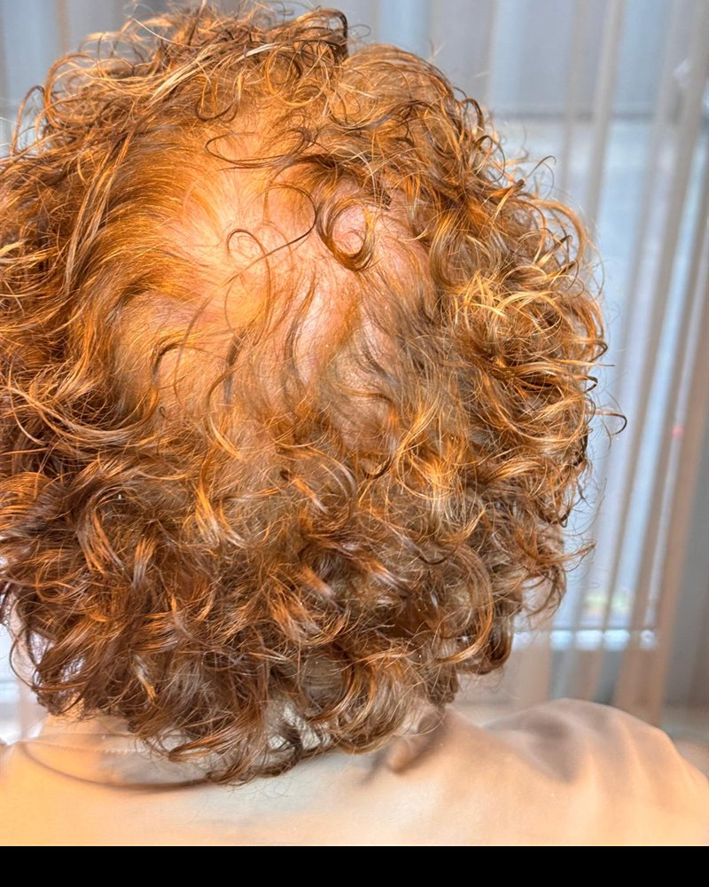
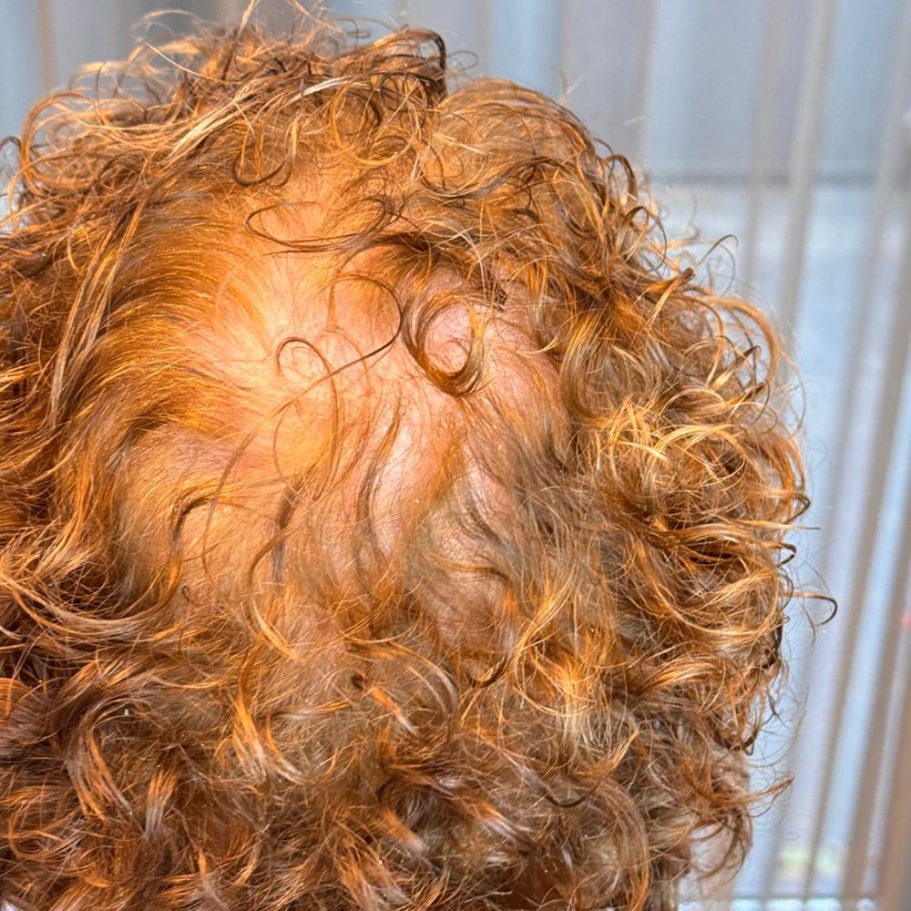
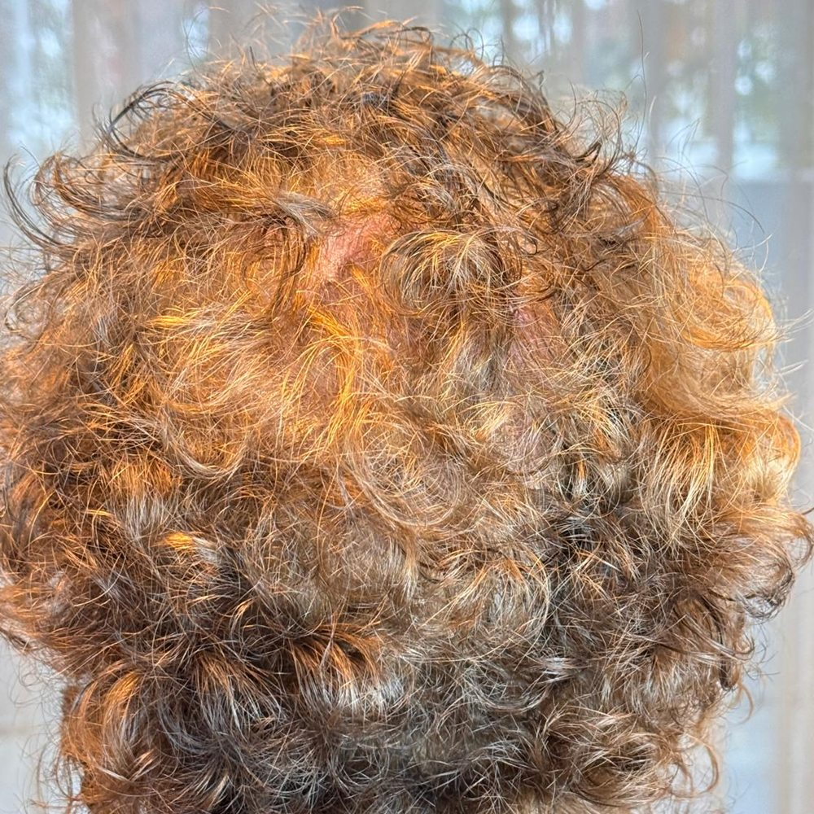
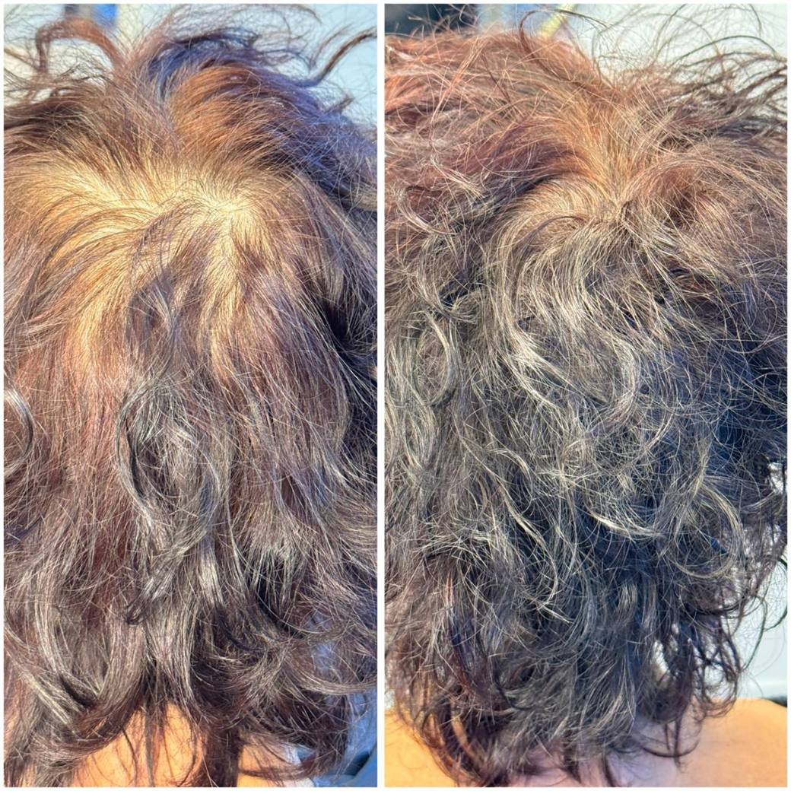
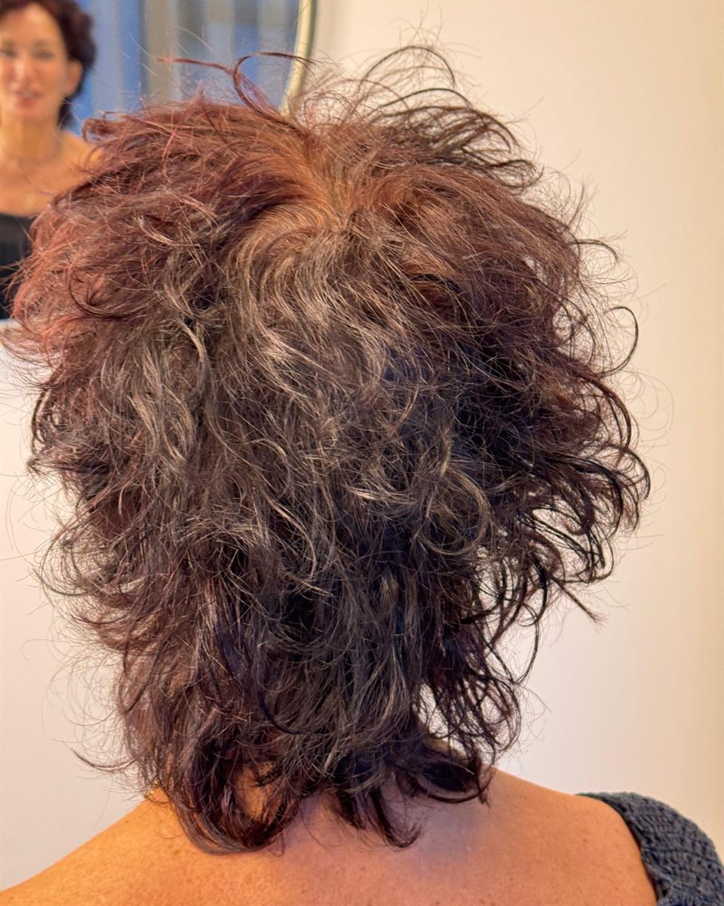
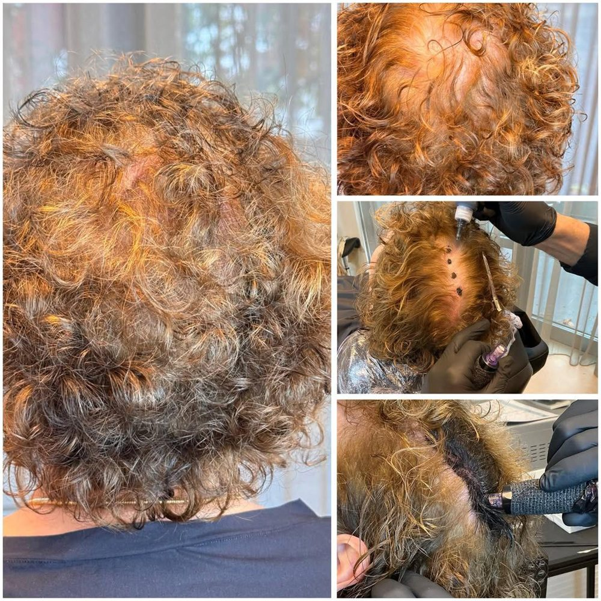

Hoofdhuidcamouflage · Scalp shading
Bij dunner wordend haar valt zelden het haar zelf op — het is de lichte hoofdhuid die erdoorheen schijnt. Wij leggen de schaduw terug die vol haar op uw hoofdhuid werpt. U houdt uw eigen kapsel, er wordt niets geschoren.
Het consult is gratis en vrijblijvend. U hoort meteen of deze behandeling bij uw haar past.

Er is geen haar bijgekomen. Alleen het contrast tussen de hoofdhuid en het haar is weg.

Voor
Na

Alle foto’s zijn van cliënten uit onze eigen praktijk in Oisterwijk, geplaatst met hun schriftelijke toestemming. Geen stockbeeld, geen bewerkte resultaten.
Met een fijne naald brengen wij een zacht veld pigment aan op de hoofdhuid, tussen uw eigen haar door. De hoofdhuid krijgt niet de kleur van uw haar, maar de schaduw die een volle haardos erop werpt. Juist die schaduw verdwijnt als het haar dunner wordt.
Is het haar op een plek volledig verdwenen, dan is scalp micropigmentatie de betere keuze. Dat vertellen wij u eerlijk tijdens het consult, ook als het betekent dat deze behandeling niets voor u is.
De volledige behandelgids De techniek, het verschil met scalp micropigmentatie, de zone-indeling en de nazorg — uitgebreid uitgelegd op onze eigen site. Lees de gids →01 · Gratis consult
Wij kijken naar uw haar en hoofdhuid, bepalen samen de kleur en tekenen op welke zones wij behandelen. U hoort de prijs voordat er iets gebeurt.
02 · Eerste sessie
Ongeveer twee uur. Wij bouwen de toon rustig op in lagen, zodat het resultaat nooit te donker wordt. U kunt daarna gewoon naar huis of naar het werk.
03 · Tweede sessie
Na ongeveer vier weken maken wij de dichtheid af, nu zichtbaar is hoe de eerste laag is uitgehard. Heeft u aan één sessie genoeg, dan blijft het bij één.

€ 150 per zone, per sessie
Meestal twee sessies · ongeveer € 300 per zone
Heeft u aan één sessie genoeg, dan betaalt u er ook maar één. Welke zones nodig zijn bepalen wij tijdens het gratis consult, en u hoort het volledige bedrag voordat wij beginnen. Geen nacalculatie en geen verrassingen achteraf.
De meeste cliënten omschrijven het als goed te doen: een licht krassend gevoel, vergelijkbaar met een stevige kam. De kruin is doorgaans gevoeliger dan de zijkanten. Wordt het onaangenaam, dan kunnen wij verdoven of een pauze inlassen — zeg het gerust tijdens de sessie.
Dat is precies waarom wij in lagen werken en nooit in één keer op de einddichtheid gaan zitten. De toon wordt afgestemd op uw eigen haarkleur. De eerste dagen oogt het resultaat donkerder dan het wordt; tijdens het herstel zakt het terug naar het zachte schaduweffect dat wij hebben afgesproken. Beoordeel uw resultaat dus niet in de eerste week.
Nee. Wij werken tussen uw eigen haar door en u houdt uw kapsel precies zoals het is. Kom met schoon, droog haar zonder stylingproducten, dan kunnen wij de hoofdhuid goed zien.
Ja, maar wacht 30 dagen na uw laatste sessie: kleurproducten komen onvermijdelijk op de hoofdhuid terecht en kunnen vers pigment aantasten. Belangrijker nog: de toon wordt afgestemd op uw haar zóáls het nu is. Wilt u naar een andere kleur, laat dat dan vóór de behandeling weten of verf eerst — dan stemmen wij af op het haar dat u straks heeft.
Ongeveer twee jaar, waarna het rustig en gelijkmatig vervaagt. Dat is bewust zo: het pigment zit ondieper dan bij scalp micropigmentatie en is verdund, zodat het niet uitloopt en niet tot een vlek vervaagt. Uw haar verandert in twee jaar — er komt grijs bij, de dichtheid verschuift — en bij elke opfrissessie stemmen wij de toon opnieuw af op het haar dat u dan heeft.
Ja, de toon wordt per cliënt aangemaakt. Wel eerlijk: hoe lichter uw haar, hoe kleiner het contrast met uw hoofdhuid al is, en hoe subtieler de winst. Bij donker haar op een lichte hoofdhuid is het verschil het grootst. Tijdens het consult zeggen wij u wat u in uw geval mag verwachten.
Ja. Uw hoofdhuid is de eerste dagen wat roze en het resultaat oogt donkerder dan het wordt. Houd uw hoofdhuid vier dagen droog — droogshampoo mag — en was uw haar vanaf dag vijf weer voorzichtig. Sporten en zwemmen komen later. U krijgt de volledige nazorg mee naar huis.
Allen de Koning werkt in Oisterwijk vanuit een eigen behandelkamer in het Medisch Centrum Voorste Stroom. Micropigmentatie is geen bijzaak naast iets anders: het is het enige wat hier gebeurt.
De praktijk is GGD-vergund na inspectie ter plaatse op hygiëne en vakbekwaamheid — na te kijken in het landelijke RIVM-register. U tekent vooraf een toestemmingsformulier en krijgt uw nazorginstructies schriftelijk mee.
Stuur een bericht via WhatsApp met wat u stoort — een foto van uw kruin of scheiding mag, dat scheelt vaak een heen-en-weer. U krijgt meestal binnen een dag antwoord en wij plannen een gratis, vrijblijvend consult in.